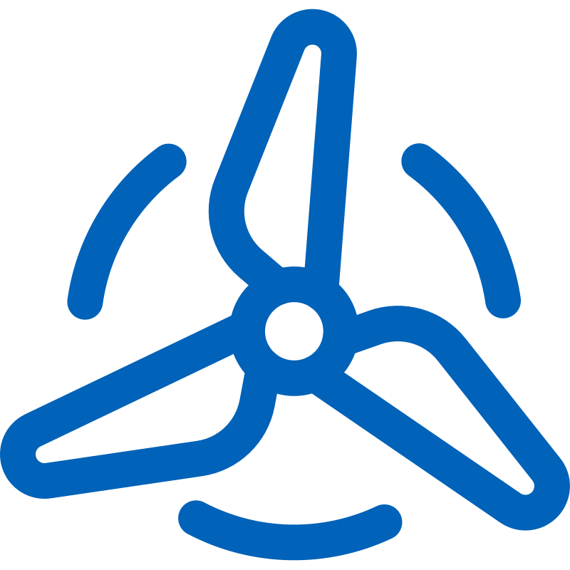
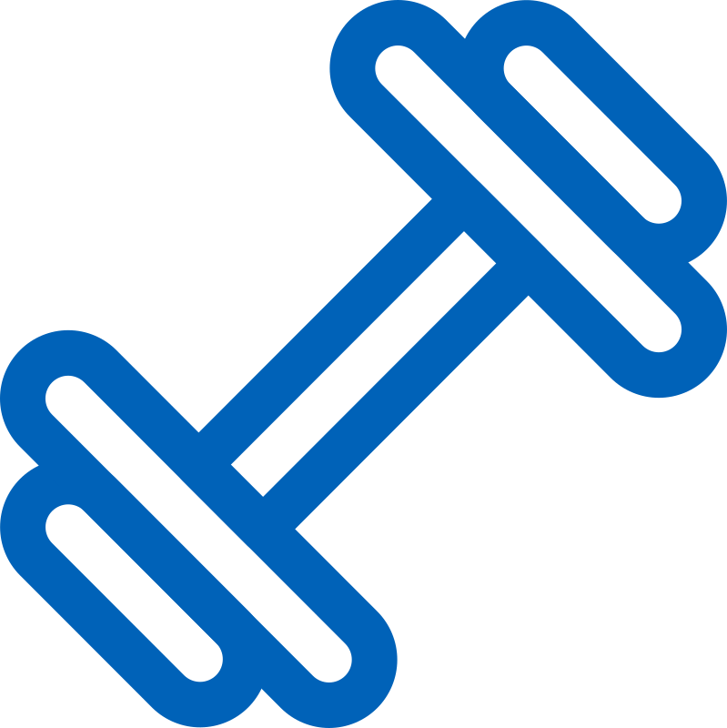
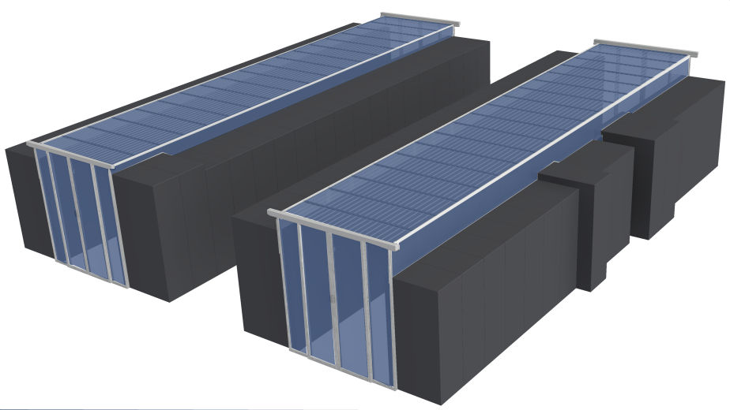
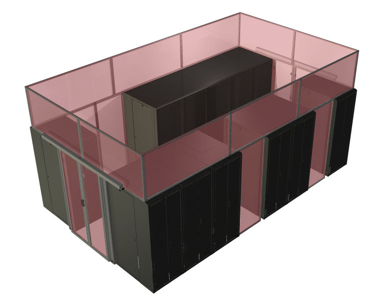
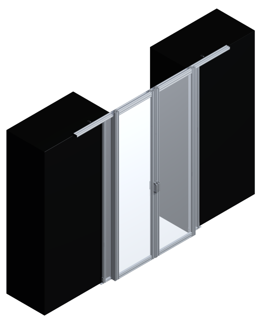
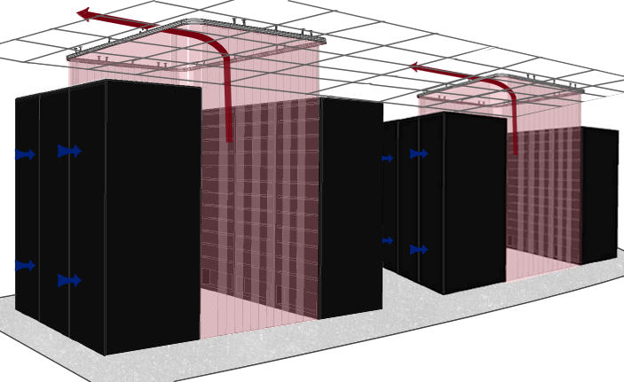

We are committed to working with our clients to create and maintain the best solutions in the industry.
At WindChill, we specialize in containment solutions. We collaborate closely with each client - regardless of project scale - to design and fabricate custom systems that meet their specific requirements. Once the design is finalized, we commence manufacturing. Our rigid containment units are constructed from robust aluminum frames and clear, fire-rated polycarbonate that offers the industry's highest optical clarity. A variety of door configurations are available to address distinct operational needs. In addition to our standard product line, we engineer and build bespoke solutions to overcome unique obstacles or constraints present in any data-center environment. Whether implementing hot-aisle or cold-aisle containment, we are dedicated to delivering reliable, precisely fitted products.
WindChill Engineering launched in 2012, building on more than four decades of combined manufacturing expertise. Recognizing a gap in the market for a containment partner that collaborates closely with data-center stakeholders, our founders set out to deliver fully customized containment solutions. Since our inception, we have teamed with industry experts to serve a diverse clientele—including small businesses, colocation facilities, large private institutions, and Fortune 500 enterprises.
Above all, we take pride in every facet of our customer support. From the initial design phase through installation, warranty, and ongoing assistance, our team is always ready to answer questions and ensure the end-user is satisfied with the solution. We back our commitment with responsive, knowledgeable service that anticipates needs at each step. Experience our support once, and you'll never look elsewhere.

Targeted airflow creates optimal temperatures with less effort leading to significant reductions in power usage and operational costs. 1
On average, the amount of costs saved through containment usually pays for itself in a year or less. 2

Protect servers from thermal stresses
Less energy means less environmental impact
Custom-fitted data center equipment delivers superior efficiency, reliability, and total cost of ownership by matching hardware precisely to facility layout, cooling capacity, and workload profiles. Custom solutions simplify maintenance, speed deployment, and improve fault isolation, resulting in higher uptime and predictable service levels. For organizations with unique capacity needs or strict compliance and scalability goals, custom-fitted equipment provides the best balance of performance, efficiency, and long-term value.

Cold Aisle Containment in data centers isolates the cold air as it is fed into the racks.

Hot Aisle Containment is isolating the hot air in the return aisle and directing it back to the cooling unit.

WindChill rigid doors, rigid walls, cieling panels, and GapHOG products combine to create the best value in data center airflow containment.

WindChill data center curtains, or soft containment, are a low cost alternative to rigid containment.